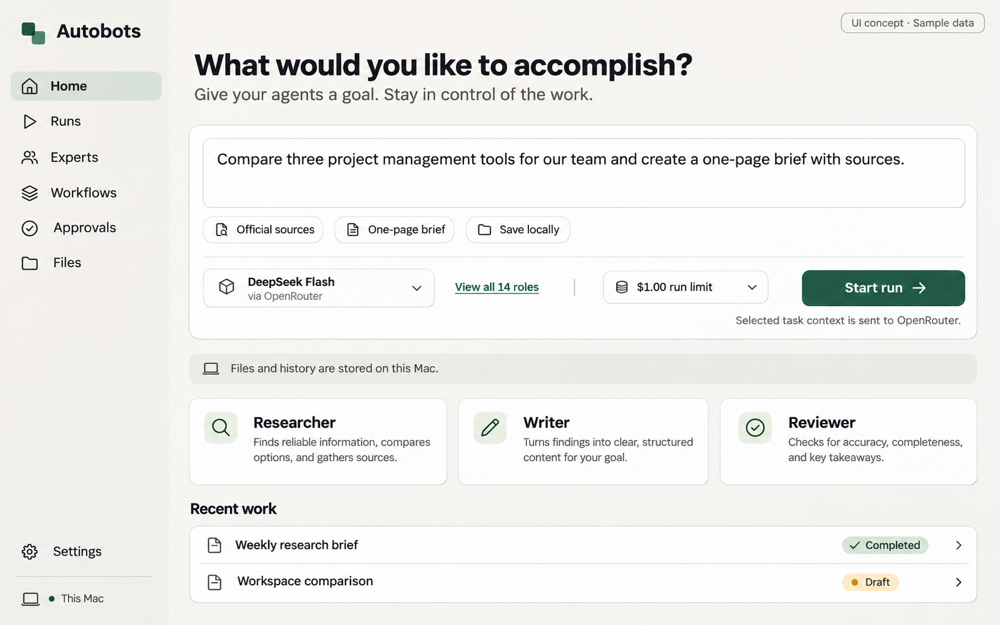
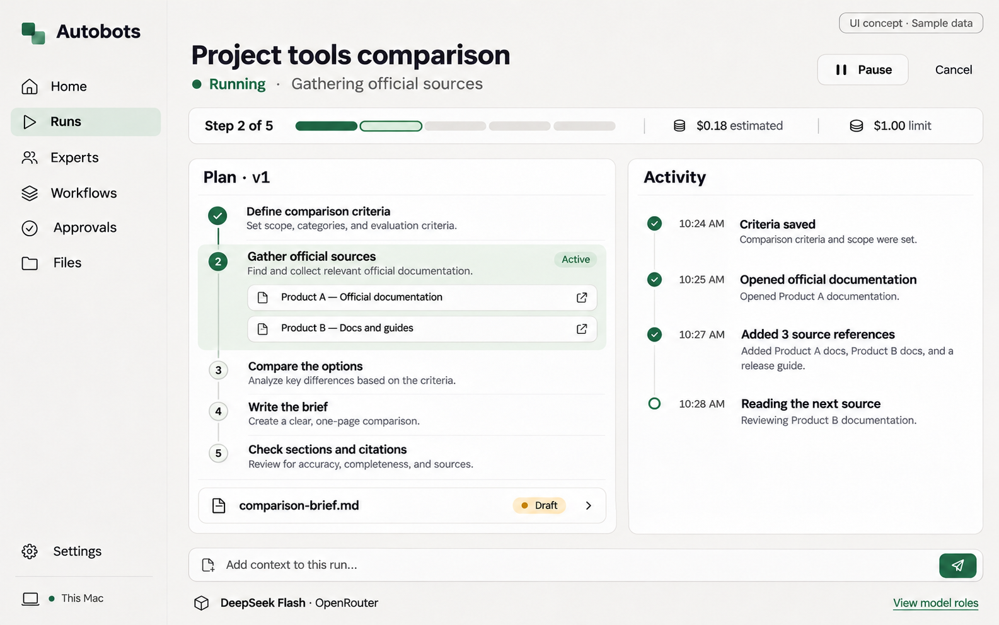
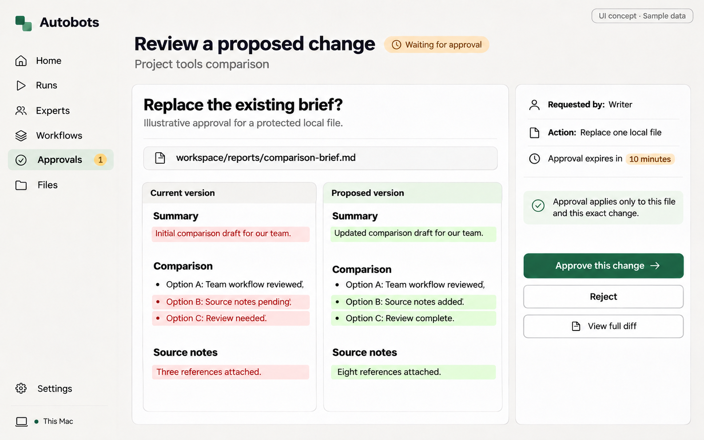
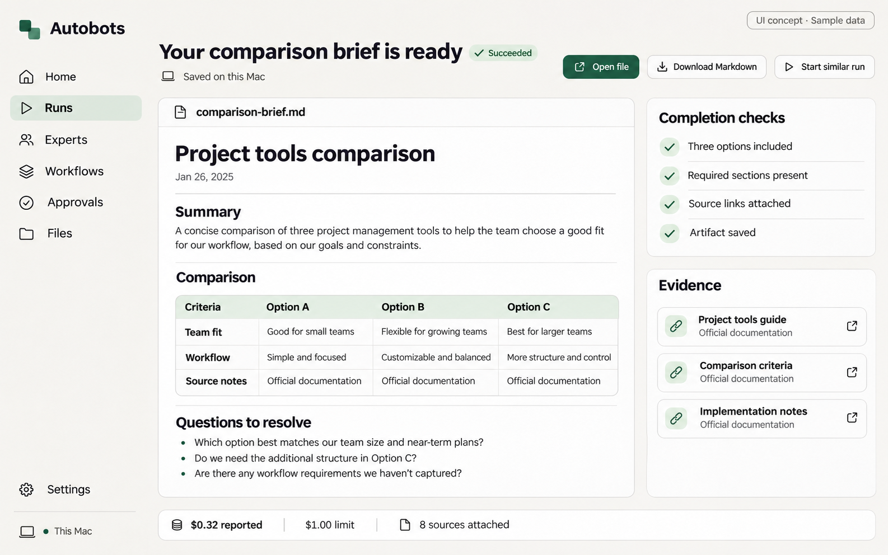
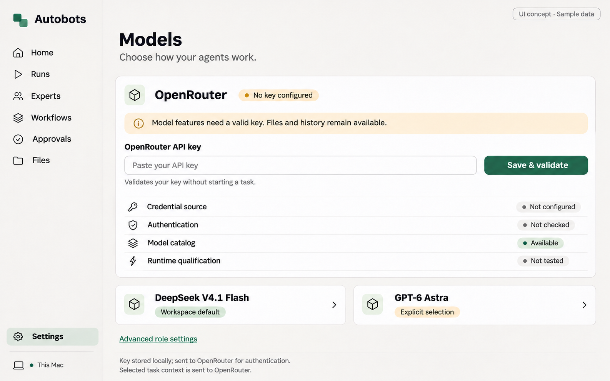
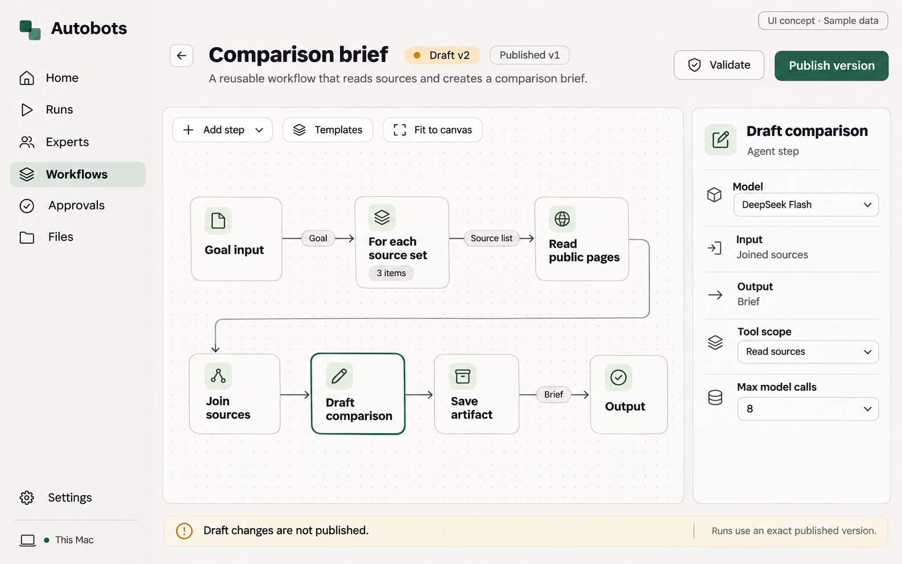

Start with a goal
Describe an outcome, choose a model and set the run budget. The home screen gives the user a clear place to begin.


Follow the work
A visible plan and an activity timeline make progress understandable. The emerging artifact, estimated spend and run controls stay within reach.


Review the exact change
An illustrative protected-file replacement shows the current version, the proposed version and the scope of the decision.


Open the result and its evidence
The completed brief is the focus. Sources, completion checks and reported usage sit beside the result.


Connect OpenRouter
A calm missing-key state explains what is needed. Saving a key, validating authentication and qualifying a model are distinct.


Make the task repeatable
A readable workflow canvas turns a repeatable task into a versioned process, with draft validation and publishing as separate actions.

